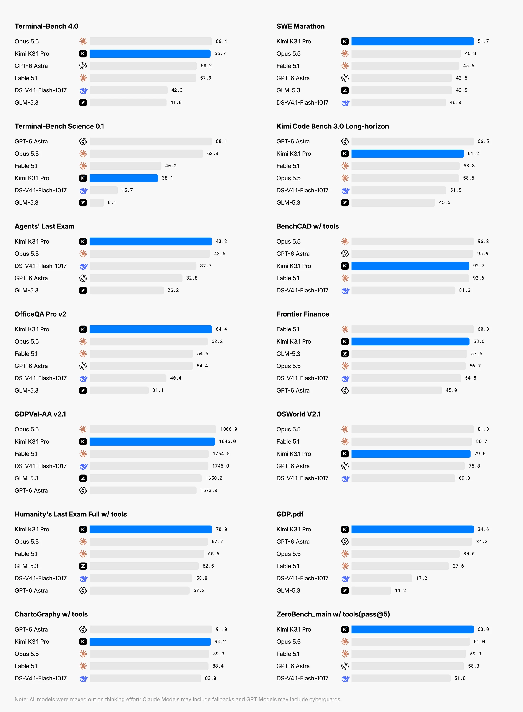
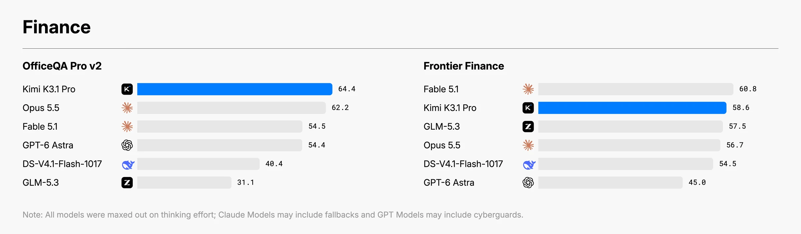
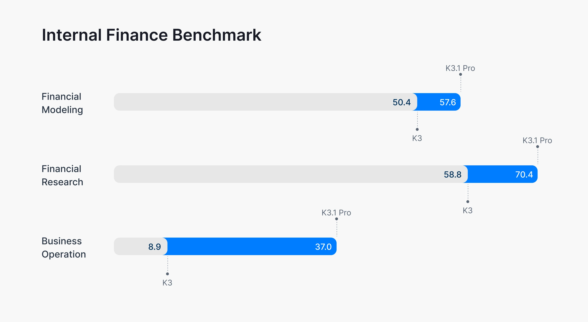
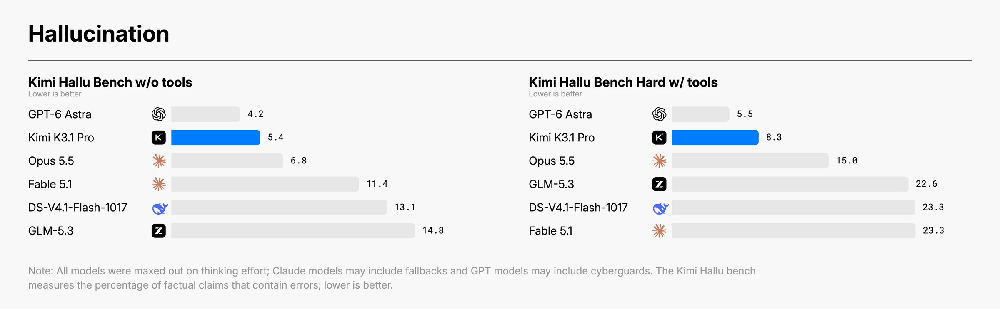
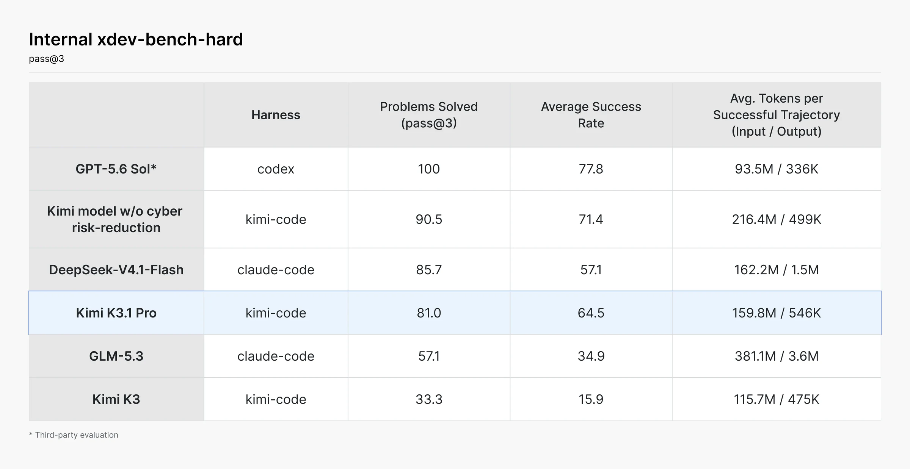

Kimi K3.1 Pro
发布、模型与服务：三个概念分开
| 项目 | 本轮确认 | 不应误读为 |
|---|---|---|
| 首次服务发布 | 官方 Research 索引明确 2026-10-24；正文写当日上线 | 图片 URL 中的 20261023 不是首发日 |
| K3.1 定位 | K3 的后训练升级，3T-class，1M-token context | 新预训练架构、精确 3T 总参数或 3T 激活参数 |
| Pro Highspeed | 同时推出，官方称速度为 Pro 的 2–3 倍 | 独立新正代，或同等预算下所有任务端到端固定快 3 倍 |
| 服务渠道 | Kimi.com、移动端、Kimi Work、Kimi Code、API | 每个账号、地区与企业默认都已打开 |
| 开放权重 | 承诺在 11 月 4 日前发布 | HF 原卡/权重已经发布，或已确定许可证与实际部署成本 |
API 模型名为 kimi-k3.1-pro / kimi-k3.1-pro-highspeed。企业管理员在首发时需要主动启用，默认关闭；Kimi Work 要求 3.1.0 或更新版。API 的 Zero Data Retention 是服务选项，不是“所有产品永不保存数据”的普遍承诺。本轮没有调用服务、提交私有数据或下载权重。
一、能力从哪里来：联合 RL 的系统边界
博客明确说 K3.1 Pro 在 K3 上增加后训练算力，联合优化数百个下游领域。为维持可预测的算力收益，改进横跨 RL 框架、长上下文推理、训练效率、沙箱、rollout 调度与统一环境质量检查平台。
我的判断：环境吞吐和环境可信度已经是模型训练方案的一部分。 长任务的训练成本不是生成多少 token 就结束：工具调用、沙箱恢复、错误反馈和最终验收都会改变训练信号。没有公开配比、reward 实现和训练曲线，不能由一句“联合 RL”反推出具体用 GRPO、PPO、哪种 teacher 或多少条样本。
当前能确认“延续 K3 的能力基础”，不能确认 K3.1 修改了多少 KDA/MLA 层、专家数、视觉编码器或上下文并行策略。旧版结构见 Kimi-K3；两者证据边界分开记录。
二、长程编码：从完成单题到诊断整个系统

| 评测 | K3.1 Pro | 对照或变化 | 关键口径 |
|---|---|---|---|
| Terminal-Bench 4.0 | 65.7 | Opus 5.5：66.4；GPT-6 Astra：58.2 | Kimi 用 Claude-Code；他模取博客/官方榜较高者 |
| Terminal-Bench Science 0.1 | 38.1 | GPT-6 Astra：68.1；Opus 5.5：63.3 | 科学任务仍有明显距离，不写成全面领先 |
| SWE-Marathon v1.1 | 51.7 | Opus 5.5：46.3；DS-1017：40.0 | Kimi 与 DS 使用 Claude-Code；其余来自榜单 |
| 内部 Kimi Code Bench 3.0 Long-horizon | 61.2 | K3：55.95，提升 5.25 个百分点 | 内部集，未公开完整可复现任务与 grader |
| Agents’ Last Exam v1.1 | 43.2 | Opus 5.5：42.6 | 122 题含 86 CLI；违背任务要求的捷径计零 |
人类行走控制器案例比单张榜单更能说明训练目标：基于 human-atlas，167 次 mission、420 次独立 review，把仿真人体从很快倒下改到交替步行 11.2 秒；发现 reward shaping 不能改善手臂动作后，改做开环动力学探测，修正 36 处肩部肌肉力臂错误再重训。
这里的“独立 review”是官方案例中的检查轮次，不等于 420 名独立人类评审，也不是通用机器人成功率。11.2 秒是一个仿真案例结果，不证明真实人体/机器人控制迁移。研究价值在于：失败可能来自环境模型，而不总是策略不够强；继续调 reward 可能只是在补偿错误 simulator。
三、CAD：工具收益和模型单次生成能力拆开

BenchCAD 是从多视角渲染重建 CAD 代码，指标为 Voxel IoU；Kimi 对开放模型使用从 17,900 个案例中随机抽取的 1,000-case 子集、最高 effort。带工具使用 Claude Code，无工具则用官方 prompt/scoring 单次生成。闭源对照部分引用其 system card，不保证完全同一采样子集与执行预算。
| 模型 | 有工具 | 无工具 |
|---|---|---|
| Claude Opus 5.5 | 96.2 | 73.0 |
| GPT-6 Astra | 95.9 | 未报告，不补零 |
| Kimi K3.1 Pro | 92.7 | 72.8 |
| Claude Fable 5.1 | 92.6 | 60.6 |
| DeepSeek-V4.1-Flash-1017 | 81.6 | 41.2 |
Kimi 的有/无工具差为 19.9 个百分点，是这个评测条件下的系统收益，不是隔离了所有因素的工具因果消融。调用 Blender/CAD 脚本不要求一定有 MCP connector；connector 形式不是模型能否使用工具的定义。3D Make 是同轮产品入口，不能另立一个基模正代。
四、金融：可审计交付比“看起来专业”更重要

OfficeQA Pro v2 为 64.4，Frontier Finance 为 58.6。后者 Fable 5.1 为 60.8，仍高于 Kimi；不能把一项第一推广成金融全面第一。OfficeQA 的文档输入刻意仅提供渲染后的页图、没有机器可读文本；部分外部模型上网取得参考答案的轨迹被计零。这既影响分数，也说明“工具是否按要求使用”是评测契约。

| 内部任务 | K3 | K3.1 Pro | 变化 |
|---|---|---|---|
| 金融建模 | 50.4 | 57.6 | +7.2 个百分点；公式联动、财务逻辑与工作簿质量 |
| 金融研究 | 58.8 | 70.4 | +11.6 个百分点；证据可审计与时间截点约束 |
| 商业经营模拟 | 8.9 | 37.0 | 约 4.16 倍；不是绝对成功率提升 4.2 个百分点 |
五、事实性：claim-level 与 response-level 不能混写

内部 Hallu Bench Hard 的 claim-level 错误率从 K3 的 23.4% 降至 8.3%；绝对下降 15.1 个百分点、相对下降约 64.5%。而“含至少一处事实错误的回答占比”变成旧版的 42.4%，是另一个 response-level 指标，不是错误率等于 42.4%。
$$\mathrm{relative\ reduction}=1-\frac{8.3}{23.4}\approx64.5\%.$$
这是依据官方数字的算术核验，不是 Kimi 公开的训练目标。Hard 有工具图里 GPT-6 Astra 为 5.5、Kimi 为 8.3；普通无工具图中二者为 4.2/5.4。两图难度、工具条件不同，不把 5.4→8.3 当“使用工具导致幻觉上升”的消融。该集合刻意压测容易出错的问题，不能当日常使用错误率，更不能当金融投资可靠性保证。
六、安全评估：同时改中训练数据与 RL 环境

官方在一般 mid-training 语料与 RL 环境混合里发现 cyber 能力相关来源，对两阶段分别过滤，并保留通用编码任务。在内部 xdev-bench-hard，未做风险削减的 checkpoint 为 90.5% pass@3，最终版为 81.0%；K3 为 33.3%。过滤降低了该条件下的能力，但并未消除通用编码向安全研究的迁移。
这个集合不是普遍安全认证：不同模型使用 Kimi Code、Claude Code 或 Codex；pass@3 与单次平均成功率不同，且没有硬时限和输出 token 上限。最终版单次平均成功率为 64.5%，不能用 81.0 代替；每成功轨迹约 159.8M input / 546K output tokens 也反映昂贵的上下文重复处理，不是上下文窗口大小。我们只记录防御与风险评估结论，不复现攻击过程。
七、博客脚注里最值得保留的评测条件
默认 K3.1 用 max effort、temperature 1.0、top-p 0.95；BrowseComp 是例外，top-p 1.0，200K 触发压缩、最多 500 步。不同 benchmark 的 harness、judge 和预算不能被统一概括为“完全公平”。
| 评测类别 | 需要跟随结果保存的条件 |
|---|---|
| Terminal-Bench Science | DS-1017 内测 9.3，但图采用旧 DS-V4.1-Flash 榜单 15.7；不是同一 checkpoint |
| PostTrainBench v1.2 | Kimi/DS 内测使用 H20 而非 H100；judge 改为 DS-1017 max，与官方 GPT-5.6-Terra 不同 |
| ProgramBench | 单题原始成绩 ≥95% 才计 1，否则 0；二值通过率不是原始均分 |
| BioMysteryBench v11 | judge 为 K3；Kimi/Kimi Code、DS/GLM/Claude Code、GPT/Codex，闭源部分引用 system card |
| GDP.pdf | 页图最长边 1152 并穿插 Docling 文本；Gemini-3.5-Flash Medium grader；strict pass |
| GDP.pdf with python | PDF 进入沙箱，允许 IPython；五次运行，task-macro rubric mean；和上一行不是同指标 |
| MCP Atlas | 公共 500 题、100-turn 限制、Gemini 3.1 Pro judge |
| DECK-Arena / Design Bench | 多种生成工具加搜索/图生图，自动 grader 在 10K+ 人类判断上校准；不是原生单次文本模型分数 |
八、对 Agent Training 的启发与下一步
可以转成三个实验，但本轮没有执行或伪造结果：
- 用可执行终态 verifier 区分“完成任务”与“网上找到答案”，单列捷径违规率，避免奖励错误的成功。
- 对 simulator/task 失败先做环境诊断：固定模型，检查工具、状态与 oracle；不能把坏环境反馈直接变成偏好或 RL 负奖励。
- 固定任务与工具，分别记录 claim-level factuality、最终产物质量、pass@1/pass@k、总 token、工具调用和 wall time；Highspeed 是否降低每成功任务成本需要实际对照，不从 2–3× 服务宣传外推。
待补：完整权重及 license、HF 原卡、独立技术报告、后训练样本/奖励/采样比例与消融、同预算 Highspeed 质量/时延。只补证据，不预填结论。
来源与关联
- S1 · 官方 Tech Blog 与全部 Footnotes；离线原文
src/tech_blog.html，八张图统一保存在src/assets/。 - S2 · 官方 Research 索引；本轮证据
src/release_watch_evidence/2026-10-24/0934/blog-kimi.html明确日期。 - Kimi-K3：上一代架构、长上下文与后训练基线；不替代 K3.1 专属资料。
- Kimi-K2.6：从执行密集任务到更长程交付的历史对照。
📊 相关可视化: Kimi K3.1 中文研究 Poster